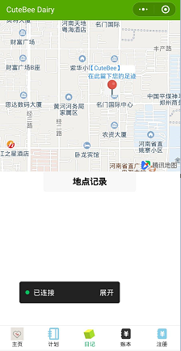
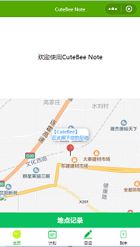

小白初次制作微信小程序小结
第一次参加微信小程序设计大赛后的总结
微信官方文档链接：https://developers.weixin.qq.com/miniprogram/dev/framework/
开场白
假期内，我与我的学习小组成员发现了大学生微信小程序的比赛，对次比较感兴趣我们就报了，然后准备制作一个方便于人们生活规划的Note，在几个礼拜内做了简单的前端学习与对官方微信小程序文档的阅读，又在几个礼拜内开始了小程序的制作，以下就是我个人做的一些小结。
小程序的目录结构
小程序包含一个描述整体程序的 app 和多个描述各自页面的 page。
- 一个小程序主体部分由三个文件组成，必须放在项目的根目录，如下：
| 文件 | 必需 | 作用 |
|---|---|---|
| app.js | 是 | 小程序逻辑 |
| app.json | 是 | 小程序公共配置 |
| app.wxss | 否 | 小程序公共样式表 |
| app.json |
必须要有这个文件，如果没有这个文件，项目将无法运行，因为微信框架把这个作为配置文件入口，整个小程序的全局配置。包括页面注册，网络设置，以及小程序的window背景色，配置导航条样式，配置默认标题。
app.js
必须要有这个文件，没有也是会报错！但是这个文件创建一下就行。
我们可以在这个文件中监听并处理小程序的生命周期函数、声明全局变量。
app.wxss
全局配置的样式文件，项目非必须。
- 一个小程序页面由四个文件组成，分别是：
| 文件类型 | 必需 | 作用 |
|---|---|---|
| js | 是 | 页面逻辑 |
| wxml | 是 | 页面结构 |
| json | 否 | 页面配置 |
| wxss | 否 | 页面样式表 |
WXML （WeiXin Markup Language） 是框架设计的一套标签语言，结合基础组件、事件系统，可以构建出页面的结构。内部主要是微信自己定义的一套组件。
WXSS (WeiXin Style Sheets) 是一套样式语言，用于描述 WXML 的组件样式，
js (JavaScript) 逻辑处理，网络请求
json (JavaScript Object Notation) 小程序设置，如页面注册，页面标题及tabBar。
PS：为了方便开发者减少配置项，描述页面的四个文件必须具有相同的路径与文件名。
收集到的WXML与HTML5的区别
| HTML | 微信小程序 |
|---|---|
<div></div> |
<view></view> |
<h1></h1>...<h6></h6> <p></p> <span></span> |
<text></text> |
<i class="icon"> |
<icon></icon> |
<input type="text"><input type="checkbox"><input type="radio"><input type="file"> |
<input/><checkbox/><radio/><view bindtab="chooseImage"> |
<a href="#"></a> |
<navigator url="#" redirect></navigator > |
<img src=""></img> |
<image src="" ></image > |
<select>$~~~~~~~~~~~~~~~~~~~~~~~~~~~~$<option></option><option></option></select>$~~~~~~~~~~~~~~~~~~~~~~~~~~~$ |
<picker range="{{area}}">$~~~~~~~~~~~~~~~~~~~~~~~~~~$<view>{{area[index]}}</view></picker>$~~~~~~~~~~~~~~~~~~~~~~~~~~~~~~~~~~~~~~~~~~~~~~~~~~~~~~~$ |
收集到的WXSS与CSS的区别
WXSS支持的选择器
目前支持的选择器有：（官方公布）
| 选择器 | 样例 | 样例描述 |
| ———————————————————— | —————— | ——————————————– |
| .class . | intro | 选择所有拥有class=“info”的组件 |
| #id | #firstname | 选择拥有id=“firstname”的组件 |
| element | view | 选择所有的view组件 |
| element，element | view,checkbox | 选择所有文档的view组件和所有的checkbox组件 |
| ::after | view::after | 在view组件后边插入内容 |
| ::before | view::before | 在view组件的前边插入内容 |
| 经过测试得出可用的选择器：（以后框架升级迭代可能发生变化） | | |
| 实际可用的wxss选择器 | 样例 | 样例描述 |
| – | – | – |
| element element | view text | 选择view组件内部的所有text组 |
| :active | view:active | 点击view组件时的状态 |
| :focus | input:focus | 选择获取焦点的input组件 |
| :first-child | view:first-child | 选择属于父组件的第一个子组件的每个view组件 |
| :last-child | view:last-child | 选择属于其父组件最后一个子组件每个view组件 |
| :first-of-type | view:first-of-type | 选择属于其父组件的首个view组件的每个view组件 |
| :last-of-type | view:last-of-type | 选择属于其父组件的最后view组件的每个view组件 |
参考资料：WXSS和普通CSS的区别（四）
按钮button的使用
在制作小程序的过程中我们遇到的一个小问题，当时在弄一个“地点记录”的按钮时，代码写成了
<button type="primary;width:100%" bindtap="markPhoneCall">地点记录</button>
效果如下：

然而很明显我们是想让这个按钮的宽度与页面宽度相等，经过在网络上的查找学习后我们发现了问题所在，width与height要引用CSS里的style才行。
解决后：

可见在HTML（WXML）与CSS（WXSS)的应用方面我们还有些欠缺。
相机的使用
关于相机的使用，我们在网上查找了一些教程与代码，在前后置摄像头转换的部分我们无法实现，目前也没有将相机应用到小程序中，之后我们还会研究一下。
侧边栏
对于我们的项目来说，侧边栏还是比较重要的。
参考资料：侧边栏特效
地图模块的使用
经过网上的搜索与学习，可以简单的创建一个地图模块以及一些参数的使用。之前在偶然在网上看到一些地图的API就很好奇想使用，然而现在不会调用API，害。
参考资料：微信小程序之地图功能